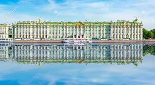
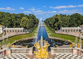
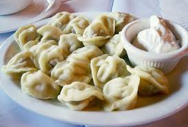

Arquitetura imperial
Arquitetura
São Petersburgo é o grande palco da arquitetura imperial russa, refletindo o poder, a elegância e o refinamento da corte dos czares entre os séculos XVIII e XIX.
A cidade foi projetada para ser uma “janela da Rússia para a Europa”, e sua arquitetura mistura influências francesas, italianas e alemãs com um toque único russo.
Exemplos da arquitetura
Palácio de Inverno (Museu Hermitage)
Principais Palácios
Inspirado no Palácio de Versalhes, mas com um toque único russo e vista para o Golfo da Finlândia.
Famoso pelo Grande Palácio e pelos jardins cheios de fontes espetaculares.
Destaque para a Grande Cascata, com mais de 60 fontes e esculturas douradas
Por que visitar?
Peterhof é sinônimo de luxo imperial ao ar livre. Ideal para quem ama jardins, fontes e vistas panorâmicas.
Passeios noturnos
Durante o verão, entre final de maio e início de julho, São Petersburgo vive o fenômeno das Noites Brancas, quando o sol quase não se põe e o céu permanece claro durante grande parte da madrugada.
Esse fenômeno acontece porque a cidade está situada em uma latitude muito ao norte. Mesmo quando o sol “se põe”, ele fica tão perto do horizonte que o céu nunca escurece completamente.
Passeios Para fazer
Passeios pelos canais iluminados, com reflexos dourados da cidade sobre as águas.
Comidas típicas
Pelmeni O “ravióli” russo
Pequenos bolinhos recheados com carne moída (geralmente porco, boi ou cordeiro), temperados com cebola, alho e especiarias.Muito populares durante o inverno!

Borscht
Uma sopa vibrante, feita com beterraba, repolho, batata, cenoura e carne (geralmente boi ou porco). Tem uma cor avermelhada intensa e sabor agridoce, servido quente ou frio, dependendo da estação. Sempre acompanhada de smetana (creme azedo) e, às vezes, pão preto. Apesar de sua origem ucraniana, é muito apreciada na Rússia e faz parte do cardápio tradicional.